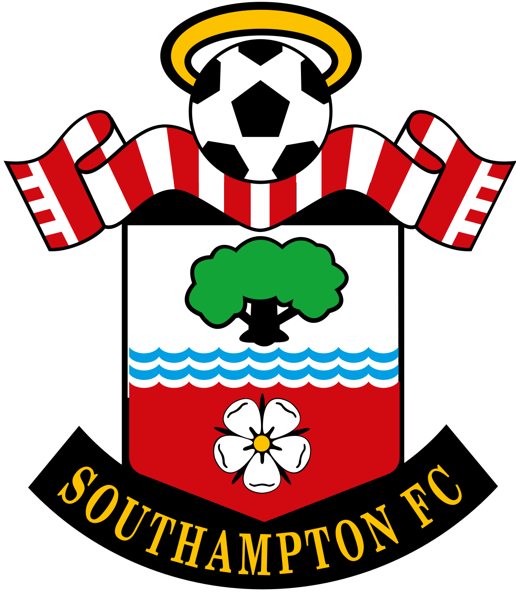
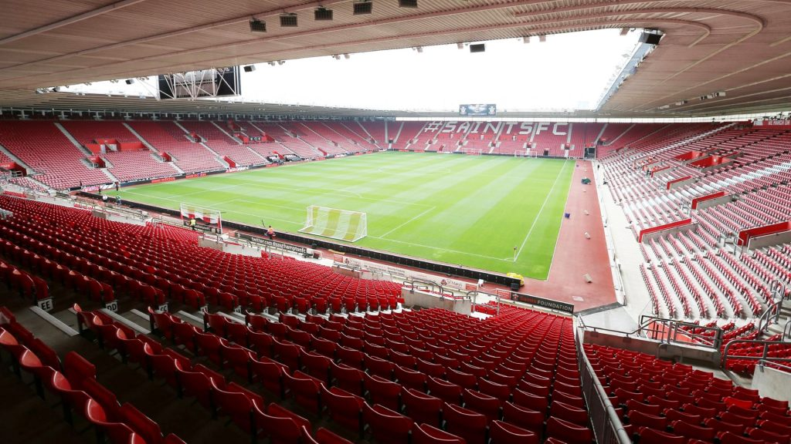
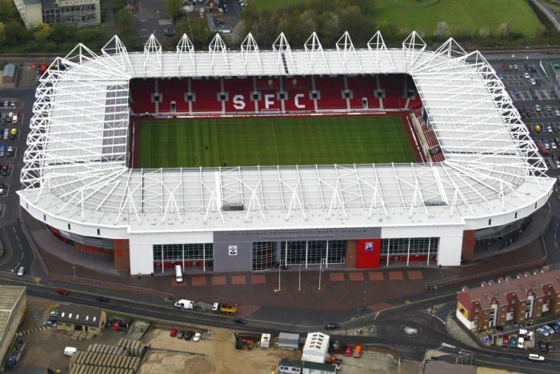

SOUTHAMPTON
Nombre completo: Southampton Football Club
Apodo: The Saints (Los Santos)
Fundacion: 1885
Ciudad: Southampton, Southampton
Estadio: Estadio St Marys
TITULOS

Fa Cup
1
1975/76
ESTADIO
Nombre: Estadio St Marys
Fundacion: 2001
Ciudad: Southampton
Capacidad: 32.689 espectadores

